本書は、ANGLEX を貴社でお試しいただく PoC（実証検証）の計画と、これまでに開発した機能の一覧をまとめたものです。
ANGLEX には、図面の読込から販売会社・加工工場との見積の受け渡しまで、多くの機能があります。PoC ではそのすべてを一度に確かめるのではなく、積算の起点となる「初期段階」に絞ります。図面を正しく読めるか、担当者が 3D で確認して重量と見積まで出せるか、現行より速く確認漏れなく進められるか、の 3 点です。
初期段階の PoC で、次の 3 つの問いに数字で答えを出します。
DXF・PDF・スキャン画像の実図面から、部材の仕様・長さ・穴を拾えるか。読めないものを「要確認」として正しく示せるか。
認識結果を図面上と 3D で確認・修正し、重量計算書と見積書まで担当者自身で作れるか。
図面受領から見積書までの時間が短くなるか。溶接・穴・アンカーの確認漏れを防げるか。
積算の流れのうち、図面の読込から見積書の出力までを PoC の対象とします。販売会社・加工工場との受け渡しや学習機能は、初期段階の結果を見てから次段階で検証します。
| 初期 PoC の対象外とするもの | 理由と扱い |
|---|---|
| 販売会社・加工工場との受け渡し（A→B→C）、Rev 管理、役割別ビュー | 社外の関係者の参加と運用ルールの決定が必要なため。初期段階の合格後に、関係会社を交えて次段階で検証します。画面はデモでご覧いただけます。 |
| 認識・単価の学習機能 | 一定量の案件を流してから効果が出る機能のため。PoC 期間中の修正記録は残し、次段階の評価材料にします。 |
| サーバー版（部署内共有・メール通知） | PoC は PC 単体（オフライン版）で行い、社内ネットワークへの設置は不要とします。 |
| シミュレータ・外部形式の書出し・カレンダー連携 | 積算の初期段階には直接関係しないため。参考デモとしてご覧いただけます。 |
担当者は次の 4 つの場面を順に操作します。PoC ではそれぞれの場面で、正しさと所要時間を記録します。
1図面を読み込み、認識結果を見る
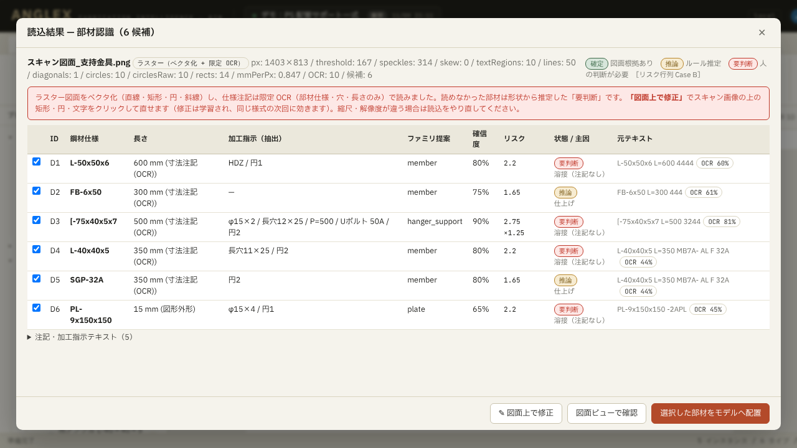
スキャン画像を読み込むと、部材ごとに仕様・長さ・加工（穴）・確信度・状態が一覧で出ます。OCR で読んだ注記の元の文字も並べて表示します。
2図面の上で確認・修正する
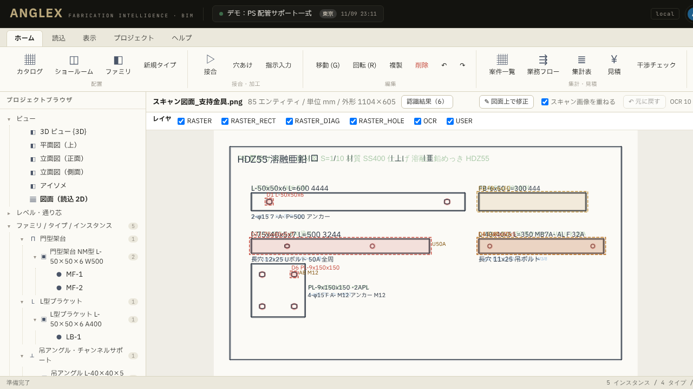
スキャン画像の上に、認識した部材（矩形）・穴（円）・文字を重ねて表示します。違うものはクリックで直せます。
33D で確認し、見落としをなくす
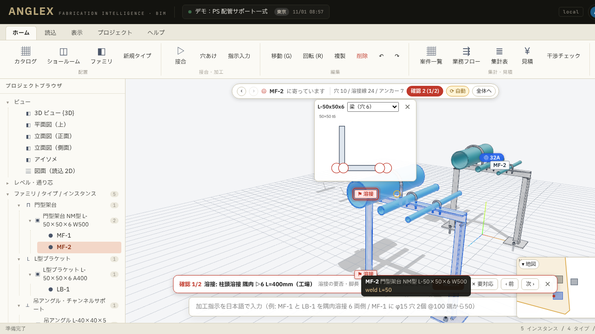
部材に寄ると、溶接・穴・アンカーの未確認箇所を 1 つずつ中央に寄せて確認できます。断面図で穴の位置も確かめられます。
4重量計算書と見積書を出す
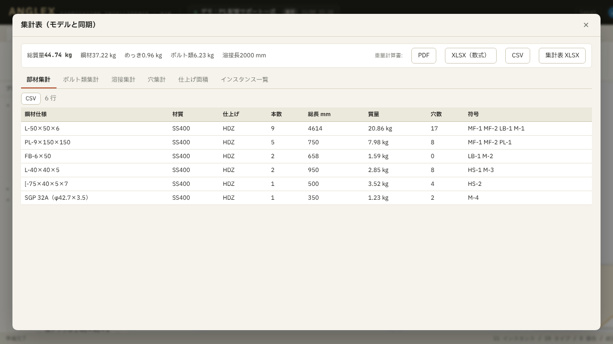
部材・ボルト類・溶接・穴・仕上げ面積を自動で集計し、重量計算書（PDF・Excel）と見積書を出力します。
合格基準は、キックオフで貴社と協議のうえ確定します。下表は弊社の社内検証結果をもとにした目安です。
| No | 区分 | 検証項目 | 確認方法 | 合格基準（案） |
|---|---|---|---|---|
| V1 | 読込 | 図面の読込 | ご提供図面をすべて読み込む | 全件読込できる。読めない形式は変換手順を確立する |
| V2 | 認識 | 部材の拾い出し | 貴社の拾い出し表（正解）と部材単位で照合 | DXF・ベクタ PDF で 90% 以上、スキャンで 80% 以上を拾う。拾えないものは「要確認」に出る |
| V3 | 認識 | 仕様・長さ・穴の読取 | 部材仕様・長さ・穴径・穴数を正解と照合 | 仕様・長さ 80% 以上、穴 70% 以上。読めない項目は「要判断」として示される |
| V4 | 確認 | 要確認箇所の抽出 | 溶接・穴・アンカー・推論部材が確認リストに出るか | 正解で確認が必要な箇所の抽出漏れ 0 件 |
| V5 | 確認 | 修正のしやすさ | 誤認識を図面上と 3D で修正し、時間を計る | 1 図面あたりの修正 15 分以内 |
| V6 | 積算 | 重量の妥当性 | 重量計算書を現行の計算と比較 | 総重量の差 ±3% 以内。差の原因を説明できる |
| V7 | 積算 | 見積明細の妥当性 | 品目・数量・金額を現行の見積と比較 | 主要品目の数量が一致し、金額差の内訳を説明できる |
| V8 | 効果 | 所要時間 | 図面受領から見積書 PDF までを計測 | 現行比 50% 以上の短縮（目標） |
| V9 | 操作性 | 担当者による操作 | 1 時間の説明後、担当者が単独で 1 案件を完了 | 完了できる。アンケート 5 段階で平均 3.5 以上 |
| V10 | 環境 | 動作環境・情報管理 | 貴社 PC でオフライン版を起動し、通信を確認 | 起動・OCR・PDF 出力が動く。外部への通信がない |
| V11 | 連携 任意 | IFC の受け渡し | 書き出した IFC4 を、貴社の BIM ソフトまたは IFC ビューアで開く | 部材の数・位置・断面名・穴・属性（仕様・材質・質量）が読める |
| V12 | 連携 任意 | NC データ（DSTV） | 同梱の照合テストピースを 1 本加工し、照合シートの図と見比べる | 穴の面・位置・径が図と一致する（違う場合は書出し設定を切り替えて再確認） |
V11・V12 は任意項目です。BIM ソフトや加工機との受け渡しも確かめたい場合に実施します。IFC は独立した IFC エンジン（IfcOpenShell）で、NC データは別実装のパーサーで弊社検証済みですが、貴社でお使いのソフト・機械での確認はこの項目で行います。
測定には ANGLEX の「実スキャン検証キット」を使います。正解表と認識結果を自動で照合し、項目別の再現率と報告書 PDF を出力します。
検証は 2 回に分けて行います。1 回目は弊社が操作して認識の実力を測り、2 回目は貴社の担当者が操作して使い勝手と所要時間を測ります。
| 作業 | 1 週 | 2 週 | 3 週 | 4 週 | 5 週 | 6 週 |
|---|---|---|---|---|---|---|
| キックオフ（目的・基準・図面選定の合意） | ◆ | |||||
| 準備（図面と正解表の提供、PC の準備） | ||||||
| 検証 1 回目：弊社操作で認識を測定（V1〜V4） | ||||||
| 操作説明会（1 時間） | ◆ | |||||
| 検証 2 回目：貴社担当者が操作（V5〜V10） | ||||||
| 中間確認（課題の共有・調整） | ◆ | |||||
| 集計・報告書作成 | ||||||
| 報告会（判定・次段階の協議） | ◆ | |||||
| 予備（追加図面・再検証） |
期間は図面の件数と担当者のご都合により調整します。週 1 回、30 分程度の定例を想定しています。
| 担当 | ワールド化成 | 導入先（貴社） |
|---|---|---|
| 責任者 | PoC 全体の計画・進行、報告書の作成 | PoC の目的・合格基準の承認、判定 |
| 準備 | オフライン版の提供と導入手順、操作説明会 | 図面・正解表のご提供、PC の準備 |
| 検証 | 検証 1 回目の操作と測定、問い合わせ対応、軽微な調整 | 検証 2 回目の操作（担当者 2〜3 名）、所要時間の記録、アンケート |
| 評価 | 結果の集計、課題と改善案の整理 | 結果の確認、現場目線での評価 |
| 項目 | 内容 |
|---|---|
| 図面 10〜20 件 | 実際の積算で使った図面。DXF・PDF・スキャン画像を混ぜて、簡単・標準・複雑の 3 段階を含めてください。社外秘の箇所は塗りつぶし可です。 |
| 正解表 | 上記図面の拾い出し表（部材の仕様・長さ・本数・穴）、重量計算、見積書。現行の Excel 等そのままで構いません。 |
| 現行の所要時間 | 上記図面の積算にかかった時間の目安（図面受領から見積書まで）。 |
| PC 1〜2 台 | Windows 10 / 11（64 bit）または macOS 12 以降。メモリは 16 GB 以上を推奨（最小 8 GB）。Chrome または Edge の最新版。詳細は別紙「ハードウェア構成 回答書」をご参照ください。 |
| 担当者 2〜3 名 | 積算を担当されている方。操作説明会（1 時間）と、検証 2 回目の操作（各 2〜3 時間程度）にご協力ください。 |
検証のたびに記入し、報告会で使います。「結果」には測定値を、「判定」には ○ / △ / × を記入してください。
| No | 検証項目 | 合格基準（確定値） | 結果（測定値） | 判定 | 課題・コメント |
|---|---|---|---|---|---|
| V1 | 図面の読込 | ||||
| V2 | 部材の拾い出し | ||||
| V3 | 仕様・長さ・穴の読取 | ||||
| V4 | 要確認箇所の抽出 | ||||
| V5 | 修正のしやすさ | ||||
| V6 | 重量の妥当性 | ||||
| V7 | 見積明細の妥当性 | ||||
| V8 | 所要時間 | ||||
| V9 | 担当者による操作 | ||||
| V10 | 動作環境・情報管理 | ||||
| V11 | IFC の受け渡し（任意） | ||||
| V12 | NC データ（任意） |
| No | 図面名 | 形式 | 難易度 | 部材 拾い出し （拾えた / 正解） | 穴 （読めた / 正解） | 重量差 % | 所要時間 （現行 / ANGLEX） |
|---|---|---|---|---|---|---|---|
| 1 | |||||||
| 2 | |||||||
| 3 | |||||||
| 4 | |||||||
| 5 | |||||||
| 6 | |||||||
| 7 | |||||||
| 8 | |||||||
| 9 | |||||||
| 10 |
各機能に、初期 PoC での扱いを示す区分を付けています。「参考デモ」の機能も PoC 中にご覧いただけます。
| # | 分類 | 主な内容 | 機能数 | PoC で検証 |
|---|---|---|---|---|
| 2 | 図面の読込・部材認識 | DXF・PDF・スキャン画像（TIFF 含む）、部材リスト、OCR、図面上の修正 | 15 | 9 |
| 3 | 3D モデリング・部材配置 | ファミリ 34 種、カタログ 151 製品、配管へ取付、接合 | 9 | 4 |
| 4 | 3D 表示・操作 | 回す・中央へ・寄る、見どころ表示、分解、表示スタイル | 8 | 2 |
| 5 | 確認・品質管理 | 確認の旗、ウィザード、見どころ送り、断面ゲージ、溶接記号 | 8 | 5 |
| 6 | 重量・積算・帳票 | JIS 質量、集計表、重量計算書、見積書、加工指示書 | 8 | 5 |
| 7 | 業務フロー・多社連携 | 受け渡し・権限、Rev・監査ログ、ダッシュボード、期限通知 | 8 | 0 |
| 8 | シミュレータ | ライブゲージ、X 線、限界探索、動画 | 1 | 0 |
| 9 | 書出し・外部連携 | IFC4・DXF・glTF・OBJ・STL・USD、DSTV NC ほか（全 19 種類） | 5 | 0 |
| 10 | 画面・動作環境 | v1 / v2 画面、オフライン版、サーバー版、操作ガイド、ライセンス表示 | 6 | 3 |
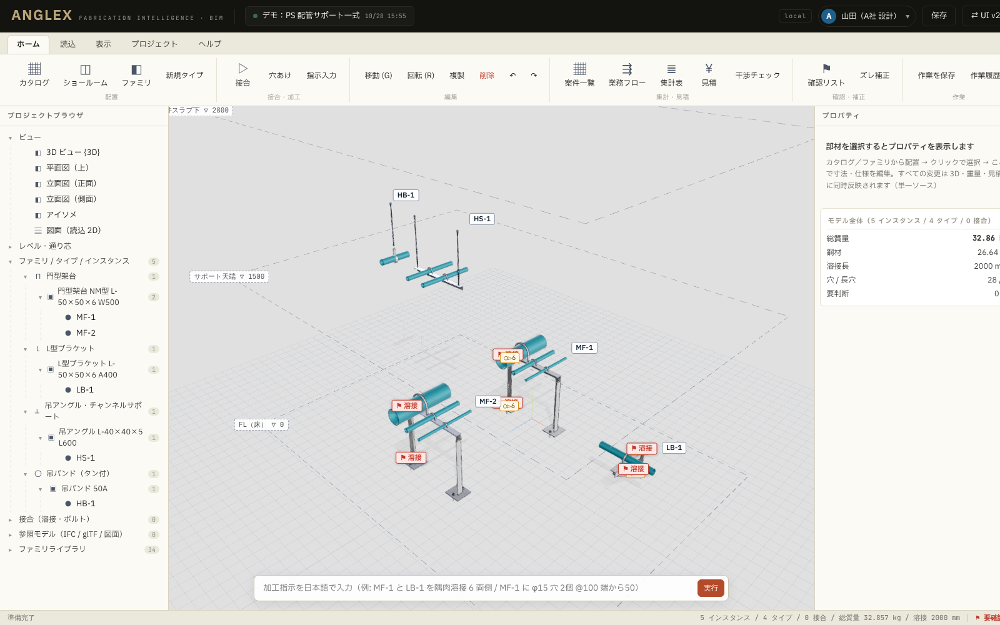
| 機能 | できること | 区分 |
|---|---|---|
| DXF の読込 | レイヤ・ブロック・寸法・文字を実際に解析し、部材候補を抽出 | PoC で検証 |
| PDF 図面の読込 | ベクタ PDF は線と文字を、画像 PDF はスキャンと同じ手順で解析 | PoC で検証 |
| スキャン画像のベクタ化 | 直線・矩形・円・斜線を抽出。ノイズ除去と ±4° の傾き補正 | PoC で検証 |
| TIFF・各種画像の読込 | スキャナ標準の TIFF、PNG・JPEG・BMP・WebP・GIF・AVIF を PC 内で展開して読込 | PoC で検証 |
| 限定 OCR | 部材仕様・穴・長さの注記だけを読む（英数字と日本語の限定語彙）。PC 内で処理 | PoC で検証 |
| 部材認識とリスク行列 | 確定・推論・要判断の 3 状態に分け、間違えたときの手戻りの大きさで優先度を付ける | PoC で検証 |
| 図面上での修正 | スキャン画像の上で矩形（部材）・円（穴）・文字をクリックして直す | PoC で検証 |
| 穴・アンカー注記の紐づけ | 「2-φ15」などの注記を最寄りの部材に結び付け、3D の穴位置に反映 | PoC で検証 |
| 実スキャン検証キット | 正解表と認識結果を自動で照合し、再現率と報告書 PDF を出力（PoC の測定に使用） | PoC で検証 |
| 部材リスト（CSV・Excel）の読込 | 既存の拾い出し表から仕様・長さ・数量の列を見つけ、そのまま 3D・重量・見積へ | 参考デモ |
| SVG・ZIP の読込 | SVG 図面の読込。ZIP にまとめた図面を一度に読込（30 件まで） | 参考デモ |
| BIM・CAD・3D 形式の読込 | IFC、STEP・IGES・BREP、glTF・OBJ・STL・FBX・PLY・3MF・Collada・3DS を参照モデルとして読込。DSTV NC は形鋼 1 本として配置 | 参考デモ |
| 立体から部材への自動変換 | STEP などの鋼材の立体から、断面・長さ・穴を読み取って部材に置き換え。元の立体と外形・穴位置を照合 | 参考デモ |
| DWG・JWW の読込 | サーバー版の変換機能で DXF に変換して読込 | 次段階 |
| 認識の学習 | 図面上の修正を記録し、同じ様式の次回の図面で自動的に効かせる。図面様式×営業所の目標管理 | 次段階 |
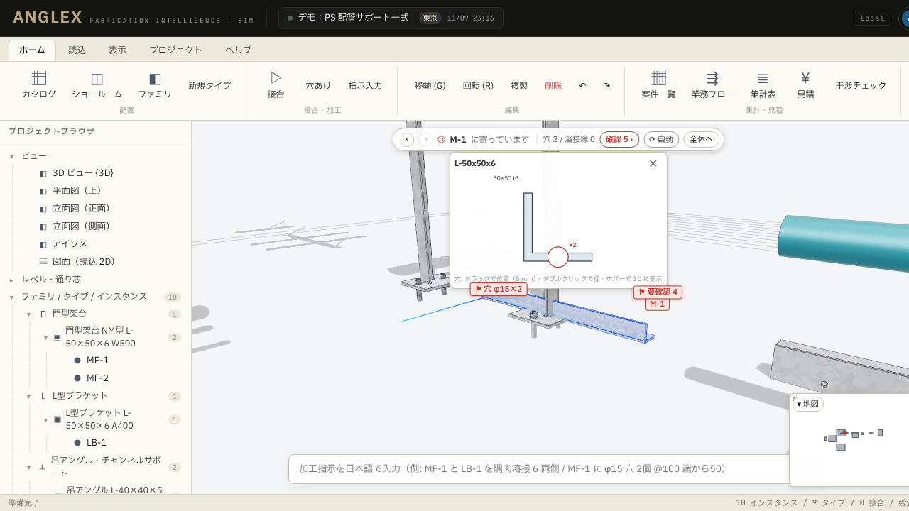
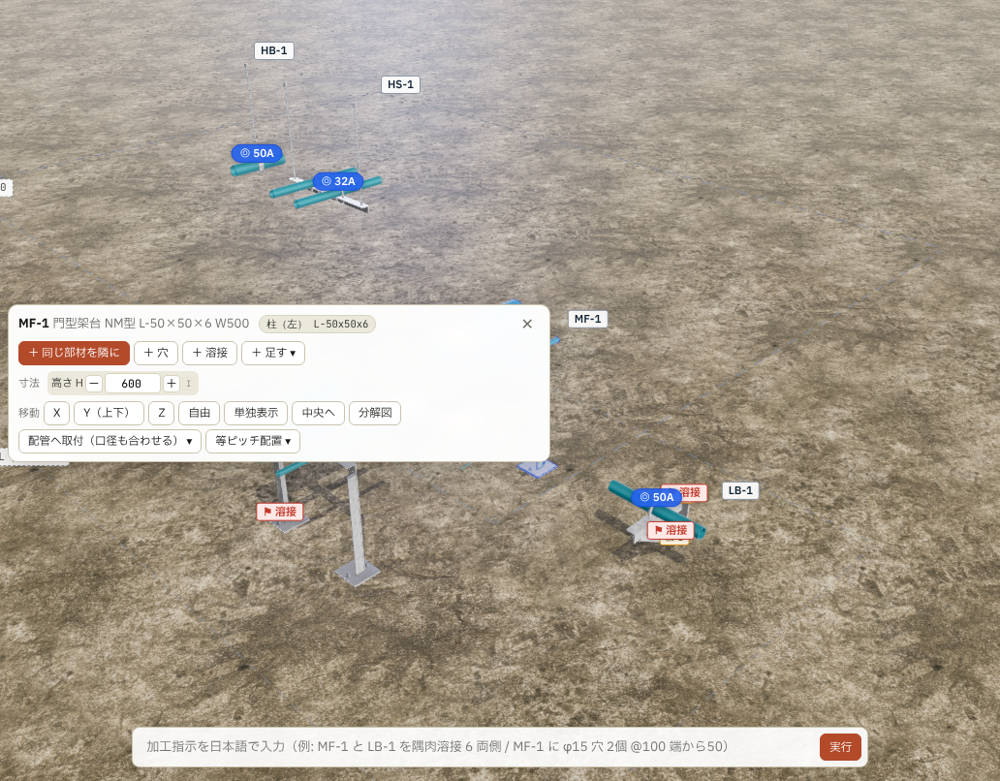
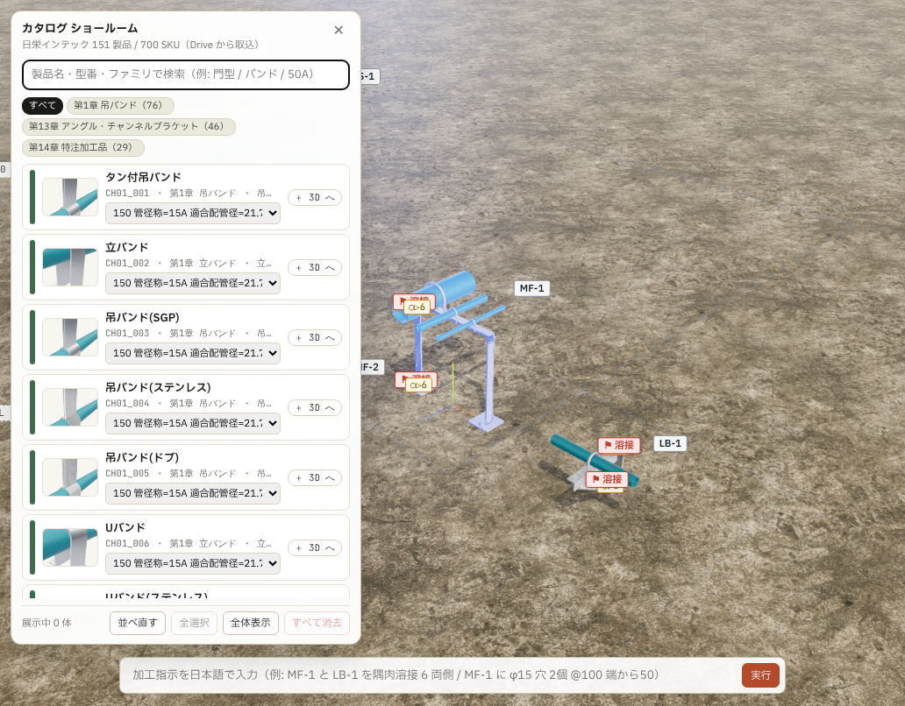
| 機能 | できること | 区分 |
|---|---|---|
| ファミリ 34 種 | 門型架台・ブラケット・吊り金具など。寸法を変えると形・穴・溶接・質量が連動 | PoC で検証 |
| コンテキストバー | 部材に触れて「＋隣に」「＋穴」「＋溶接」、寸法を ±5 mm で調整 | PoC で検証 |
| 移動・直接ドラッグ・自動密着 | ギズモや部材の直接ドラッグで移動（5 mm 刻み）。接する部材にぴたりと合わせる | PoC で検証 |
| 接合と日本語の加工指示 | 溶接・ボルト・U ボルトの接合。「MF-1 と LB-1 を隅肉溶接 6」などの文章で指示 | PoC で検証 |
| カタログとショールーム | カタログ 151 製品・700 SKU から選ぶだけで 3D に並ぶ | 参考デモ |
| 配管へ取付 | 近くの配管に「◎ 呼び径」が出て、口径と U ボルト穴ピッチを同時に合わせる | 参考デモ |
| 等ピッチ配置・複数選択 | 配管に沿った等間隔配置、まとめて整列・複製・削除 | 参考デモ |
| ボルト接合の提案 | 重なった板の穴が一致すると、ボルト接合を提案 | 参考デモ |
| 取付プレビュー | 確定前に半透明の完成形と変更内容を表示 | 参考デモ |
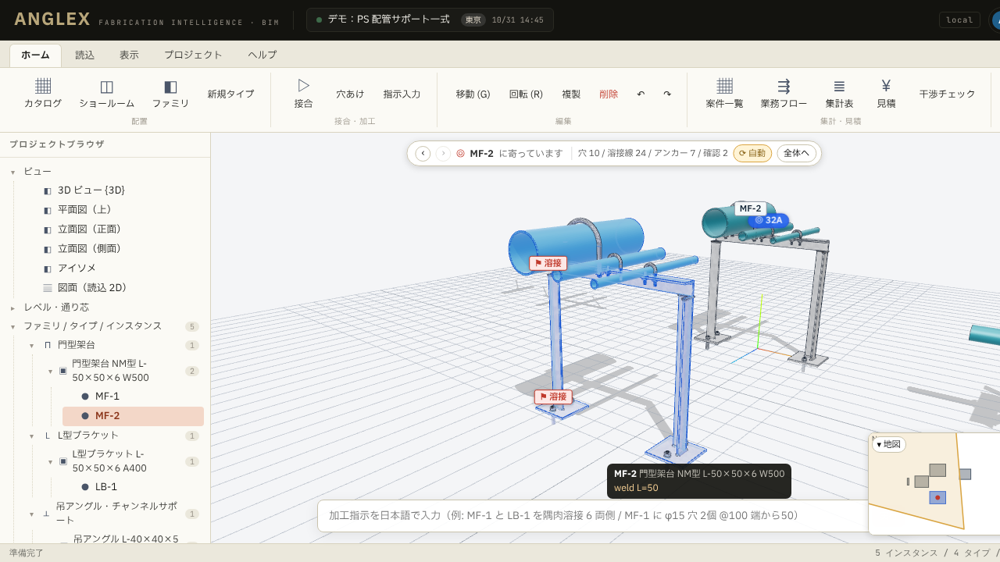
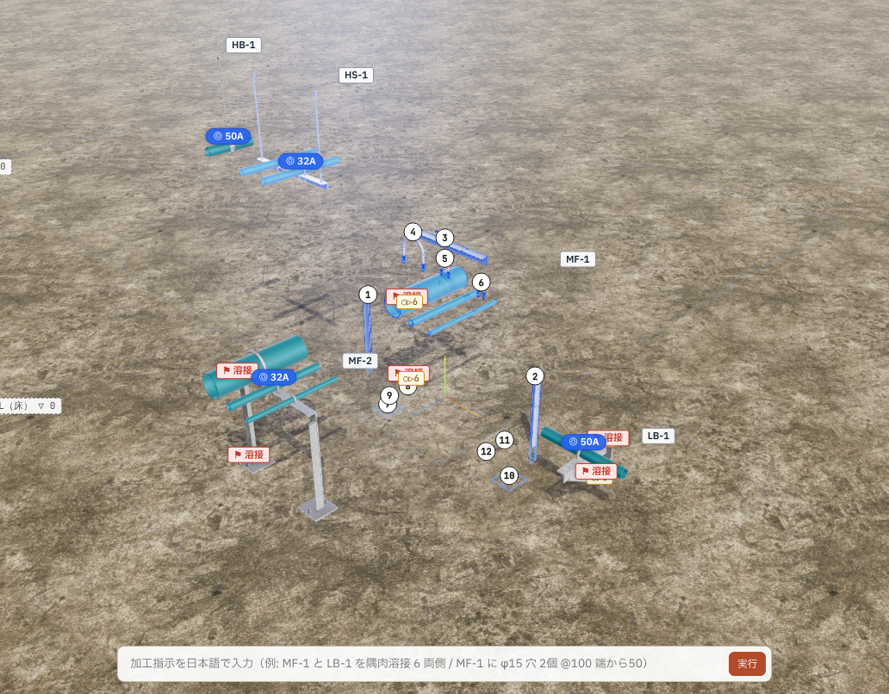
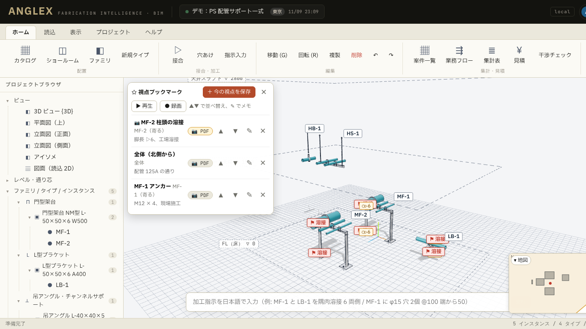
| 機能 | できること | 区分 |
|---|---|---|
| 基本操作 | 左ドラッグで回す、右ドラッグで掴む。部材のクリックで中央へ、ダブルクリックで寄る、空白のダブルクリックで全体へ | PoC で検証 |
| 迷わないための表示 | 掴んだ部材のピル、回転中心の十字、視点の履歴（戻る・進む）、初回の操作ガイド | PoC で検証 |
| 見どころ表示・自動回り込み | 寄った部材のラベルだけを残す。触らなければ部材の周りをゆっくり回る | 参考デモ |
| ミニマップ・タッチ操作 | 全体の俯瞰図で移動。タブレットでは長押しで部材を掴む | 参考デモ |
| 表示スタイル | リアル・陰影＋エッジ・隠線・ワイヤ・半透明・CAD 図面色（役割別の色分け） | 参考デモ |
| 分解・単独表示・断面 | 部材・部品単位の分解とバルーン番号、部品の単独表示、断面ボックス | 参考デモ |
| 高品質描画 | 接触陰影・環境光・めっきの質感・ボルトのねじ山・溶接ビード | 参考デモ |
| 視点ブックマーク | 視点に名前とメモを付けて保存。PDF の撮影角度に指定、順に寄るツアー再生と録画 | 参考デモ |
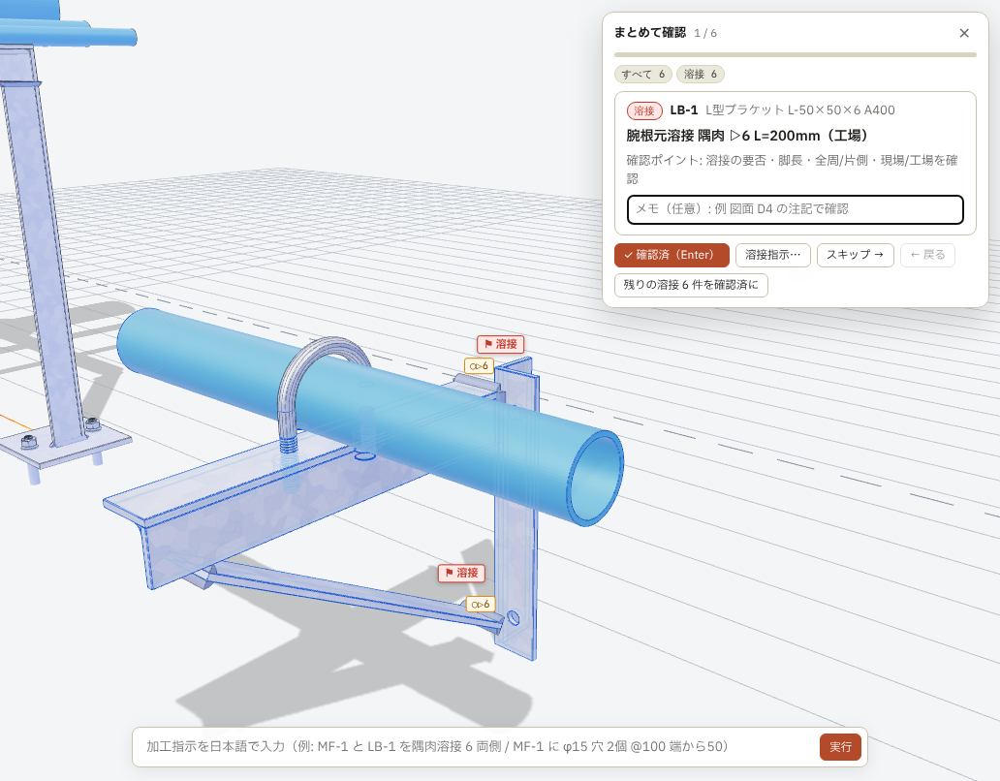
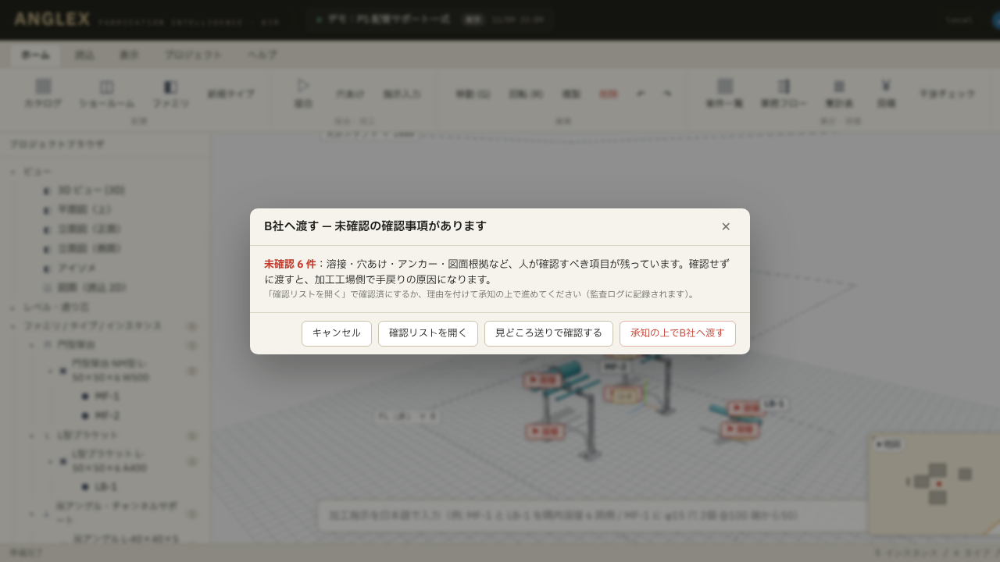
| 機能 | できること | 区分 |
|---|---|---|
| 確認の旗 | 溶接・穴・アンカー・図面根拠など、人が確認すべき箇所を 3D 上に旗で表示 | PoC で検証 |
| まとめて確認ウィザード | 確認事項をカードで送り、3D がその箇所へ自動で寄る | PoC で検証 |
| 見どころの「次へ」送り | 未確認の旗を 1 つずつ中央に寄せ、✓ で確認済みに。誰が・いつ・どの視点で確認したかを記録 | PoC で検証 |
| 断面ゲージ | 断面図で穴の位置を確認。ドラッグで位置、ダブルクリックで径を修正（端あきの目安つき） | PoC で検証 |
| 溶接記号（JIS Z 3021） | 工場溶接・現場溶接を記号で区別し、3D と帳票に表示 | PoC で検証 |
| ズレ補正 | 部材間の隙間、レベルとの段差、穴の端あき不足を検出し、まとめて補正 | 参考デモ |
| 作業保存 | 作業の途中をスナップショットで保存し、いつでも戻せる | 参考デモ |
| 受け渡し・確定前のゲート | 未確認があると止める。理由を付けた上書きは監査ログに記録 | 次段階 |
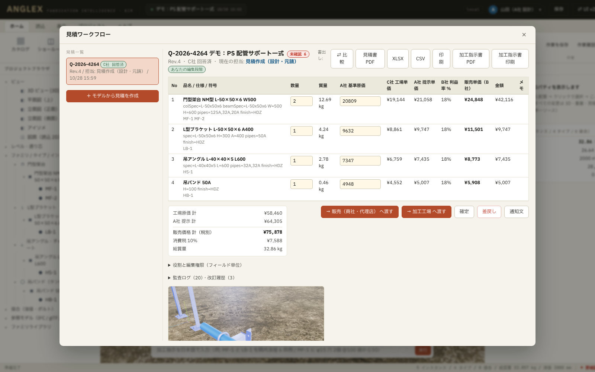
| 機能 | できること | 区分 |
|---|---|---|
| JIS 質量計算 | 形鋼・板・管・ボルト類・溶接・めっき付着量（JIS G 3192 / G 3452 / H 8641） | PoC で検証 |
| 集計表 | 部材・ボルト類・溶接・穴・仕上げ面積・インスタンス一覧。モデルと常に同期 | PoC で検証 |
| 重量計算書 | PDF・Excel（数式入り）・CSV で出力 | PoC で検証 |
| 見積の自動生成 | 材料・加工・めっき・ボルト類・管理費の明細をモデルから作成 | PoC で検証 |
| 見積書 | PDF・Excel・CSV・印刷。日本語フォント埋込済み | PoC で検証 |
| 加工指示書 | 穴座標・溶接記号・分解図・確認リストを含む工場向けの PDF | 参考デモ |
| 分解図・組立図 | バルーン番号付き分解図、組立順と現場作業の組立図（PDF） | 参考デモ |
| 学習単価 | 加工工場の回答単価を蓄積し、次の見積に適用 | 次段階 |
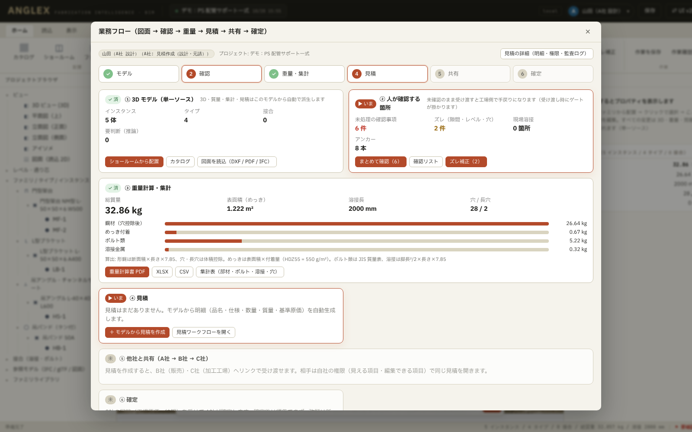
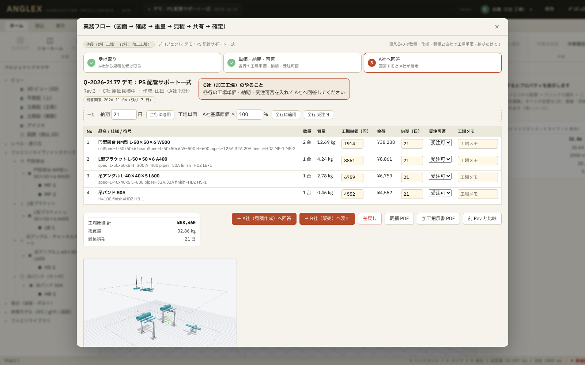
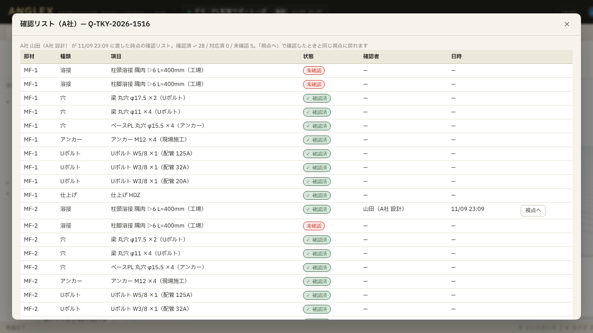
| 機能 | できること | 区分 |
|---|---|---|
| 業務フロー パネル | モデル → 確認 → 重量 → 見積 → 共有 → 確定 の「いまどこか」と次に押すボタン | 参考デモ |
| A→B→C の受け渡し | 見積作成・販売会社・加工工場の間で、共有リンクで見積を受け渡す | 次段階 |
| 項目単位の権限 | 販売価格・利益率・工場単価を、会社ごとに見せる・見せない（サーバー側でも検証） | 次段階 |
| Rev・監査ログ・比較 | 受け渡しごとに改訂を凍結。誰が何を変えたか、Rev 間の差分と理由を表示 | 次段階 |
| 役割専用ビュー | 販売会社・加工工場には、入力すべき列と「残り n 行」だけを表示 | 次段階 |
| 確認結果の受け渡し | 見積に「A社確認済 ✓ / 未確認」を表示し、確認したときの視点に戻れる | 次段階 |
| ダッシュボード・期限通知・打合せ予約 | 案件横断の一覧、期限超過のバッジと催促文、Google・Outlook / Teams の打合せ予約 | 次段階 |
| 営業所の仕分け | 案件・見積を営業所ごとに分けて表示・集計 | 次段階 |
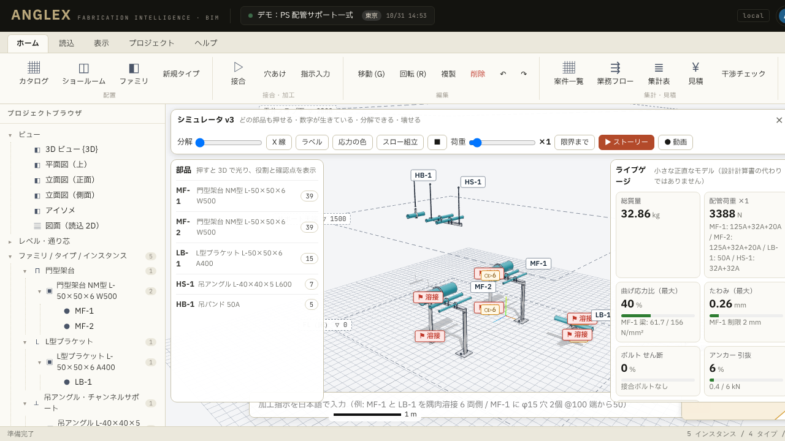
| 機能 | できること | 区分 |
|---|---|---|
| シミュレータ v3 | 部品ごとの役割表示、応力比・たわみ・ボルト・アンカーのライブゲージ、X 線表示、荷重倍率と限界探索、組立のストーリー動画。簡易モデルのため、設計計算書の代わりにはなりません | 参考デモ |
| 機能 | できること | 区分 |
|---|---|---|
| BIM 形式の書出し（IFC4） | 形鋼・板・管は断面の押し出し、穴は開口として出力（鋼材として扱える形）。仕様・材質・質量・穴の属性つき。独立した IFC エンジン（IfcOpenShell）で検証済み。商用 BIM ソフトでの読込は PoC で確認 | 参考デモ |
| CAD 形式の書出し | DXF 3D（立体）、DXF 加工図・加工図 SVG（板の展開図） | 参考デモ |
| 3D 形式の書出し | glTF / GLB、OBJ、STL、PLY、USD / USDZ（質量・衝突形状付きの SimReady パッケージ）、PNG 画像（4K） | 参考デモ |
| 加工データの書出し | DSTV NC（形鋼・板ごとの .nc1。照合テストピースと照合シート付き、機械の基準に合わせる設定あり）、穴座標 CSV、部品 JSON | 参考デモ |
| プロジェクトの保存 | プロジェクト JSON で保存・読込。作業の受け渡しに利用 | 参考デモ |
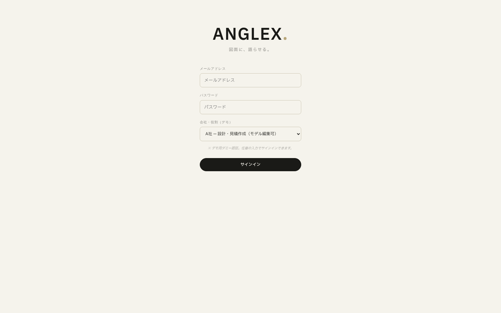
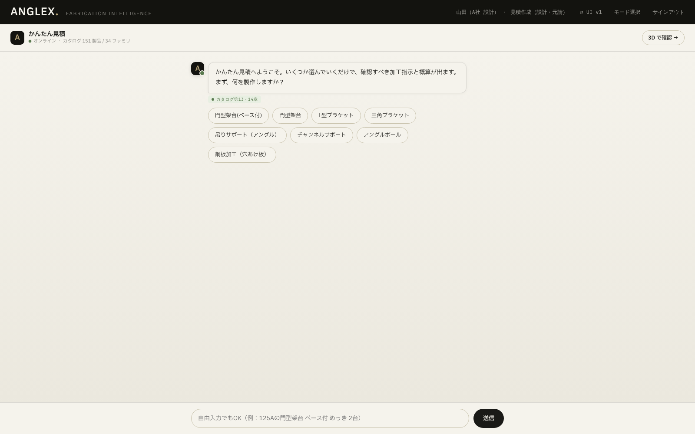
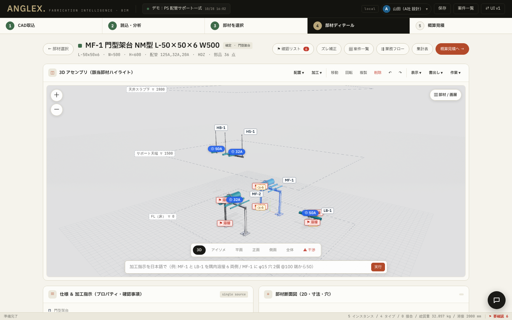
| 機能 | できること | 区分 |
|---|---|---|
| v1 / v2 の 2 つの画面 | 経験者向けの BIM ワークスペース（v1）と、初めてでも迷わないステップ型（v2）。同じデータのままボタン 1 つで切替 | PoC で検証 |
| オフライン版 | 単一の HTML ファイル（約 60 MB）。インストール不要、外部通信なしで OCR・PDF 出力・IFC／STEP 読込まで動作 | PoC で検証 |
| 操作ガイド・ショートカット | 初回の操作ガイド、「?」キーでショートカット一覧 | PoC で検証 |
| ライセンス表示 | 同梱している第三者ソフトウェア 16 件の一覧と全文を画面で表示。LGPL の STEP 読込ライブラリは差し替え可能 | 参考デモ |
| チャットで概算 | 製品・サイズ・仕上げ・数量を選ぶだけで概算見積 | 参考デモ |
| サーバー版 | 部署内での案件共有、期限のメール通知、学習の共有（追加ソフト不要の Node サーバー） | 次段階 |